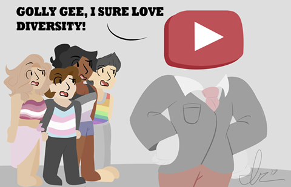
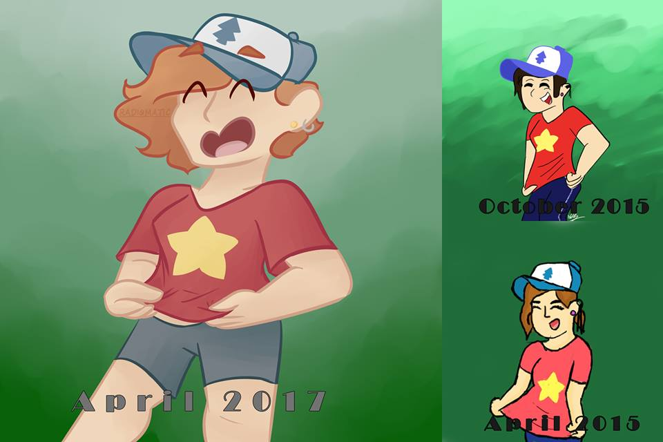

This website is a portfolio of sorts for all of my artistic endeavors
Click on the image to see it in full screen.
Hi! My name's Beau and I am an artist at LHS. The arts have always been a passion of mine, whether it be in an audial or visual form. I have invested countless hours of work into my artistic career, and am approaching 600 days of drawing in a row. This website catalogs some of my art up to April 2017. Enjoy!
Here's a piece I did that has my friends in our favourite musical:
Here's another one that I did, This one was for the school paper. It's about YouTube's restricted mode and how it blocked videos with LGBTQ+ Themes.

This one shows my progression of art. The drawing in the bottom righthand corner was done in April of 2015, and the biggest image was done earlier in April of 2017.

Hope you enjoy that taste of my artwork! If you'd like to see more, you can find it on my
Facebook or my Instagram. I am also a graphic artist for the LHS Royal Gazette, and am currently designing the logo for the LHS Robotics team.
Need art tips?
- Practice. I cannot stress the importance of Practice enough. Like I said earlier, I've been drawing for almost 2 years straight now, and my improvement has been crawling sometimes, but sticking with it will really pay off in the long run.
- Try to get in the zone! My friends constantly tease me over the "Art Zone". Whenever I get in a groove of drawing, it's hard for me to escape it. Try listening to your favourite song, Here's a song that I listen to whenever I need to get into the zone.
- Even if no one looks at your art, never stop making it. On my Tumblr I only get around 5 notes for everything I create, and that really took a blow to my self esteem. But I kept drawing, and now have a full career path laid out that I can persue. The support from others arond you will help you out in ways you can't even imagine.
Contact Info
| Phone |
(425)555-1234 |
| Email |
totallyrealemail@notfake.com |
| LinkedIn |
I'm 14 why would I have a LinkedIn |